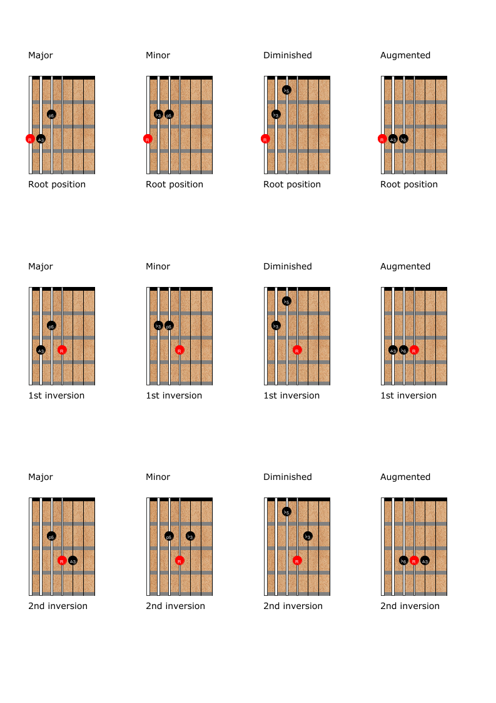

Major thirds tuning was developed by Ralph Patt in the 1960s. Patt was influenced by the free jazz improvisations of Ornette Coleman and the atonal classical compositions of Arnold Schoenberg. Though chromatic and atonal music inspired him to originally pursue the tuning, he eventually found it to be more useful than standard tuning for commercial music as well.
Though major thirds tuning can be used on a standard 6-string guitars, the smaller interval will decrease the overall range by 4 semi-tones. This can be overcome by using a 7-string guitar.1 You will probably want to get a custom set of strings and a set-up. I use the following gauges, but feel free to experiment based on your own preference. You can calculate string tension using the Mcdonald Patent Universal String Tension Calculator. Strings by Mail is a great place to order individual strings.
I use seven string guitar diagrams for all the examples in this book, however, most examples will still work on a six string guitar. If you are using a six string, just ignore the 1st string of the diagrams.
In major thirds tuning, any scale can be played in any four fret position. There are four fingerings for any diatonic scale, one starting on each left hand finger. I have used the major scale as an example, but the same principles apply to other scales2 (harmonic minor, melodic minor, etc.) as well. Here are the four fingerings for the major scale.
When extending a scale a second octave, the fingering repeats itself three strings higher.
A fingering can also be repeated diagonally four frets higher to create 3-octave scales.
One of the best features of major thirds tuning is the ability to modulate without changing positions. Improvisors can follow complex chord changes without worrying about how they will transition from one scale to the next.
The following figures demonstrate two great ways to practice scales in all 12 keys: chromatically, and counter-clockwise through the circle of fifths. Notice that in both exercises, the same fingerings repeat after every four keys.
Beginning guitarists rarely learn chords in a systematic way. Many guitarists think of chords as shapes or “grips” rather than a collection of notes or intervals.This often results in deficiencies in guitarists' knowledge, technique, and creativity.
Thirds tuning makes learning chord construction very simple. Because of the symmetrical nature of the tuning, it is much easier to learn chords based on their intervallic construction. The most common harmonies are built upon major and minor thirds. In thirds tuning, a major third higher can be found on the same fret as any given note on the next highest string. A note a minor third higher can be found one fret lower on the next highest string. The diagram to the right shows a closed root position C major triad (M3+m3).
This is the only shape for a closed root position major triad. It can be moved both horizontally and vertically. In standard tuning, you would have to learn 3 different shapes. Finding inversions is also a very simple process in thirds tuning. To invert the triad, simply move the lowest note of the chord up an octave by playing the same fret 3 strings higher. The diagram below shows all inversions of a closed C major triad.
This chapter demonstrates just a couple of progressions to practice using both open and closed voicings. Using good voice-leading in progressions is easy in thirds tuning. The following diagram contains a I IV V I (key of C) in every inversion, first using closed voicings, then using open voicings.
The following exercise is a circle progression3 in the key of C, first using closed, then open voicings. I have voiced both progressions so that they share the note in the highest voice.
Closed voicings of chords with four or more notes is a very familiar sound in jazz. While these types of chords are easily played on the piano, they are close to impossible to play in standard tuning on guitar. Traditionally, jazz guitarists solve this problem by lowering one or more notes by an octave. While these types of voicings are still possible in thirds tuning, and easy to derive, closed voicings of nearly all 4 note chords are now possible. Inverting 4-note chords is a slightly more complicated process than for triads. Since the third string up from the lowest strings is occupied, the bottom note must be moved 4 frets lower on the next highest string. The following diagram shows all closed- voiced inversions of the most common seventh chords.